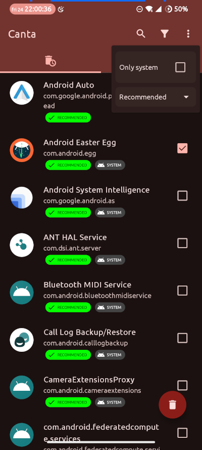

De-bloating and de-Googling an Android device using Canta

Canta is an
interesting, open-source Android app for disabling unwanted apps and
services, when there’s no easy way to do this using the standard user
interface. While Canta, and its supporting infrastructure, will work on
a rooted handset, and there are certain advantages to using it this way,
in this article I’m assuming that you can’t root, or don’t want to. I’m
also assuming that you can’t, or don’t want to, install a custom
firmware like LineageOS or GrapheneOS. Canta can’t (so far as I can see)
do anything that you can’t do using the adb utility, but
it’s potentially more convenient.
Canta is the work, more-or-less single-handed, of Samo Hribar. The app and the website do solicit donations but, so far as I can tell, there is no sponsorship or advertising. So, while Canta isn’t perfect, it’s still an impressive achievement, and a public service.
How Canta works
If you can’t root your Android handset or install a custom firmware,
the only really effective way to disable unwanted internal apps has been
to use the adb utility to run commands like
pm uninstall -k --user 0 {package}To do this, you need to install the adb utility on a
computer, and connect it to the handset using (usually) a USB cable.
You’ll also need to enable developer mode on the handset, then enable
USB debugging. When everything’s in place, you’ll then need to work out
which packages you can safely disable, but we’ll get to that later.
Canta provides a way to run the equivalent of
pm uninstall without using a computer. It also gives some
guidance on what to uninstall. You’ll still need to enable developer
mode, and make some other changes but, once it’s set up, you’ll be able
to disable and re-enable packages from the handset itself.

Canta uses Shizuku
for its low-level operation. Shizuku is an Android app that allows other
apps to interact with low-level system interfaces, like the package
manager. If you’re not using a rooted device, the most useful way
Shizuku can do that is by employing wireless debugging.
Although it isn’t widely publicized, Android exposes the same interface
over wifi that adb uses for USB cable connections. I
presume this facility is intended to be used for remote debugging, in
situations where it isn’t convenient to use a cable, or where the
handset’s USB interface is being used for something else. Whatever the
original purpose, wireless debugging can also be used from
within the handset as well, and that’s how Shizuku interacts
with the system.
To use Shizuku, and therefore to use Canta, we must first enable wireless debugging. Then we can pair the Shizuku app with the handset’s debugging interface. Shizuku doesn’t automatically restart after a reboot, so you’ll need to navigate the Shizuku user interface to re-enable it and Canta. This only takes a minute, but it’s easy to forget to do it.
With Shizuku running, Canta can use it to get a package list, and to
carry out the equivalent of pm uninstall to remove unwanted
packages.
How do we know what to uninstall?
Whether you’re using Canta, or just running adb
manually, the trickiest part of de-bloating is figuring out what is safe
to remove. To assist with this, Canta collects information from the
colossal list of bloatware maintained by Universal
Debloater Alliance. This list helpfully assigns each item a danger
level, and provides a brief description. Some of the descriptions are
vague, because a lot of the bloatware is proprietary, and the handset
vendors don’t give any information. Sometimes you’ll see comments like
“Some people reported boot loops after removing this”, or “Some people
said they could no longer install packages”. In such cases, there really
isn’t any way to know whether uninstallation is safe, except to try it.
And if you make a mistake, you’re in factory reset territory. That’s not
the fault of Canta: we simply don’t have all the information we
need.
Profiles to the (kind of) rescue
To my mind, the most useful feature of Canta is its ability to store information about which packages are installed and which are not, in the form of profiles. There is, so far as I know, no limit on the number of profiles it can store, so you can save a new profile after each successful change. You can then revert to an earlier state by reinstalling an earlier profile.
You can also copy a profile to a text document in JSON format. Had I known this before I started playing with Canta, it would have saved me a lot of time. If you save the profile documents in a safe place off the handset (e.g., by sending it in an email, or copying to an SD card), you can restore a profile even after a factory reset. While a factory reset will recover from any screw-up you might make with Canta, it will also erase all the Canta data (along with everything else, of course), and only data you saved off-device will be any use. So if you do find yourself having to reset, at least you won’t have to restart the whole process of experimentation from scratch.
Note
Of course, after a factory reset, you’ll need to reinstall Shizuku and Canta before you can reload a specific profile. It’s still better to do this kind of experimentation before you’ve done a lot of other setting up because, of course, a factory reset will destroy any other set-up you’ve done as well.
Can Canta de-Google completely?
You can use Canta to uninstall Google Play Services and the Google
Play store but, just as if you do this using adb, you’ll
need to remove everything that depends on these components.
Obviously that includes apps like GMail and Google Maps but, on some
handsets, there could be hidden dependencies. If you don’t remove
everything that depends on Google, you could end up with an unstable
handset. Ironically, you could also end up with terrible battery life,
because services will keep trying, and failing, to communicate with
Google components.
There’s lots of suggestions on the Internet about what components need to be removed to de-Google completely. Canta doesn’t help much with this because it only describes individual components.
Again, none of this is the fault of Canta: handset vendors aren’t going to be telling us in detail how to remove Google dependencies. We can only rely on the experience of other people, and a certain amount of trial and error.
Note
We talk about ‘de-Googling’ but, where privacy is concerned, handset vendors and network carriers are at least as worrisome as Google. On my Samsung handsets I can usually remove more than two hundred packages, without noticing any loss of functionality. What are those packages doing? It hardly bears thinking about.
Canta vs. adb
So far as I know, Canta can’t do anything that you couldn’t do by
running pm uninstall using adb. It just
removes the need for a computer. If, for some reason, the handset
decided to re-enable all the packages you disabled – and this does
happen – you could restore your preferred state with Canta even if
you’re nowhere near a computer.
On the other hand, I have a lot of experience with de-bloating using
adb. I have Linux scripts that remove exactly what I want,
for each of my handsets. The scripts only take a minute to run provided,
of course, that I have access to a computer.
It’s also handy that Canta provides some information about each suspect package although, again, if you’re sitting in front of a computer, you can just do a web search.
Neither Canta nor adb will do much to protect you from
your own carelessness. If you won’t to de-bloat thoroughly, you should
be prepared for a string of factory resets. It should go without saying
that you shouldn’t be using either method, if you’re expecting an urgent
call.
Closing remarks
In my tests, Canta worked well, and was easy to use. Too easy, perhaps. The problem is that, when disabling a package is a single-click operation, it’s easy to run wild, and delete things that are still in use. If you’re lucky, you’ll be able to go back to an earlier profile. If you’re unlucky, you’ll be doing a factory reset and starting again.
It seems to me that the ‘safe’ way to use Canta (and
adb) is to install a few packages and, if everything seems
to be OK after a reboot, save a profile, and test for a day or two. I
made the mistake, the first time I used Canta, of removing about two
hundred packages, which seemed fine at the time. A couple of days later,
I found the Camera app kept crashing. Clearly I’d removed something that
the Camera depended on, even though everything else seemed fine. After
each change, you really need to test _everything; ideally, over a period
of time.
Of course, this is all very time-consuming. The best way to de-bloat and de-Google is still to run a custom firmware, if your handset supports it.